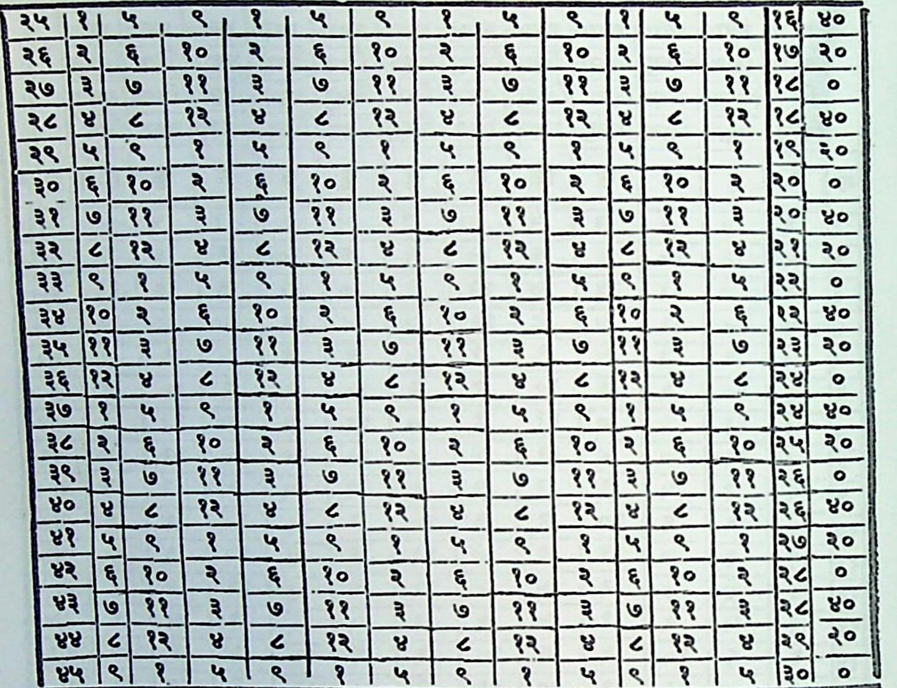

( १६ ) सर्बार्थचिन्तामणिः । अक्षवेदांशचक्रस्य प्तिः. > || > १ = कयि णीति ष्णि तीक व 7 गयी =------- = =< ॥ --- --- १ 1 अथ षष्टयंशः॥ युग्मे रपाब्यत्ययमेवं राशौ षए्यंशकानामधिपास्त्वयुम्मे ॥ घोरांशको १।६० राक्षसं २।५९ देवभागौ ३1५८ कुबेर 9।५.अरक्षोगण«५ किन्नराः ६।५९।१९।। भ्रः ७148 कुलघ्नो ८५३ गरखा ९।५२ भिसज्ञो १०।५१ मायांशकः १३१।५० प्रेतपुरीशभागः १२। ४९ ॥ अपां पतिः १३।७८ देवगणेशभागः १० । ७७ कारा १९५ 1 ४& हिभागा१६। ५९ वमूर्ता्ु १७४४ चन्द्रौ १८।४३ ॥१६॥ सद्रशकः १९।९२ कोमल २०।७१ पद्यभागौ २१।४० लक्ष्मीश २२।३९
